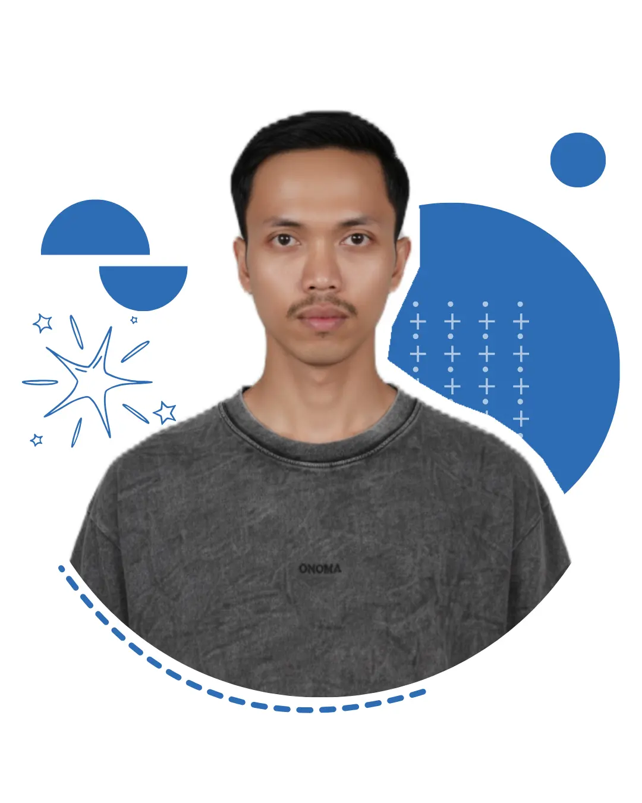
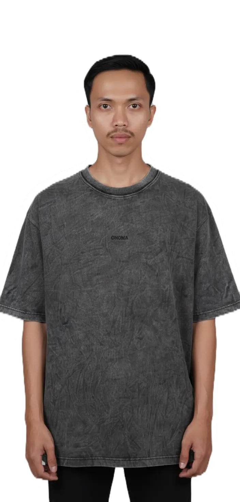
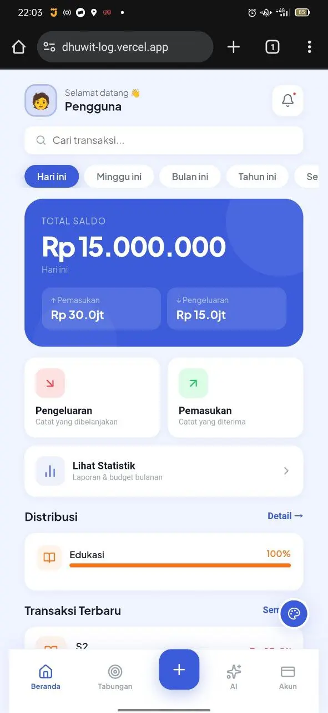
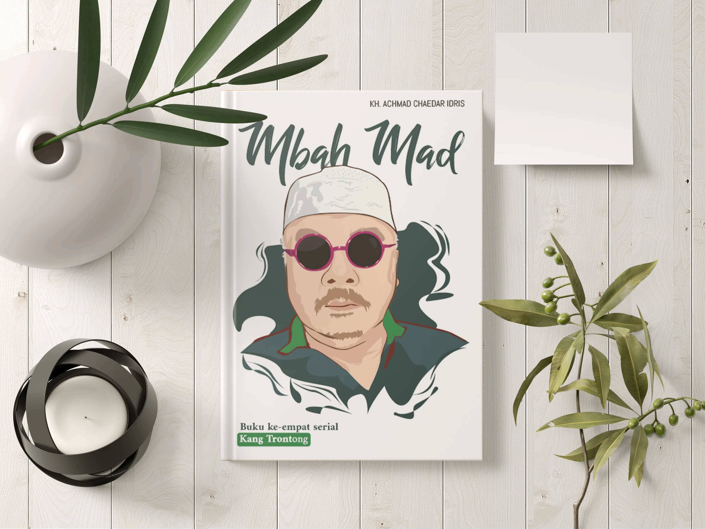
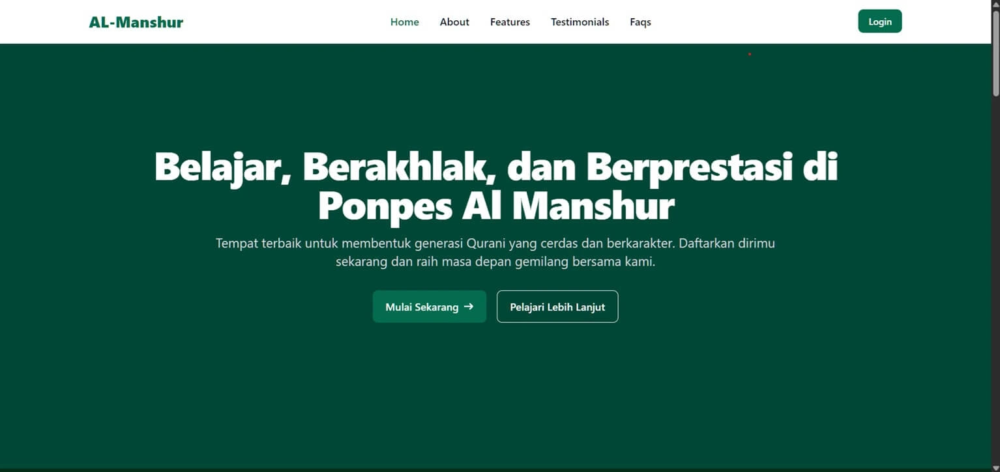
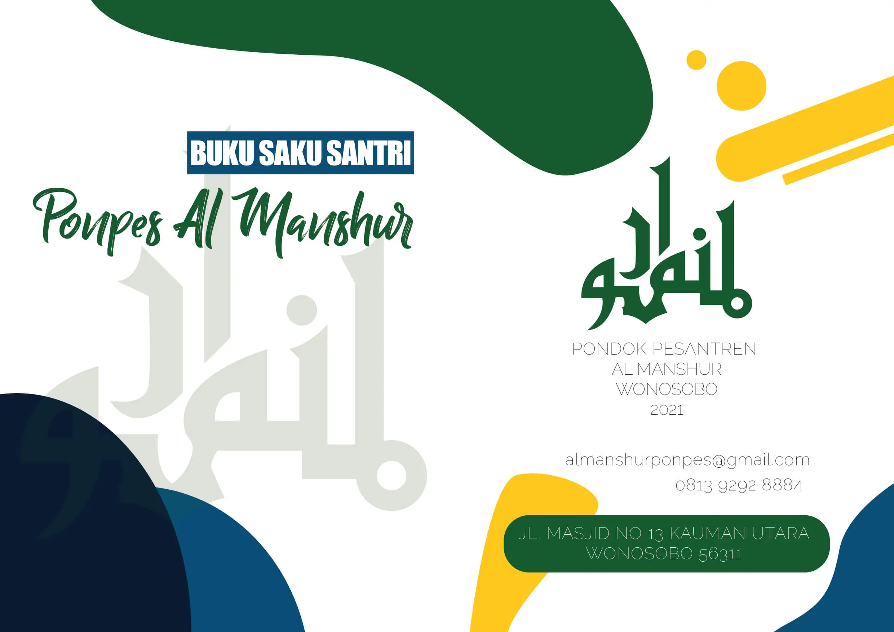
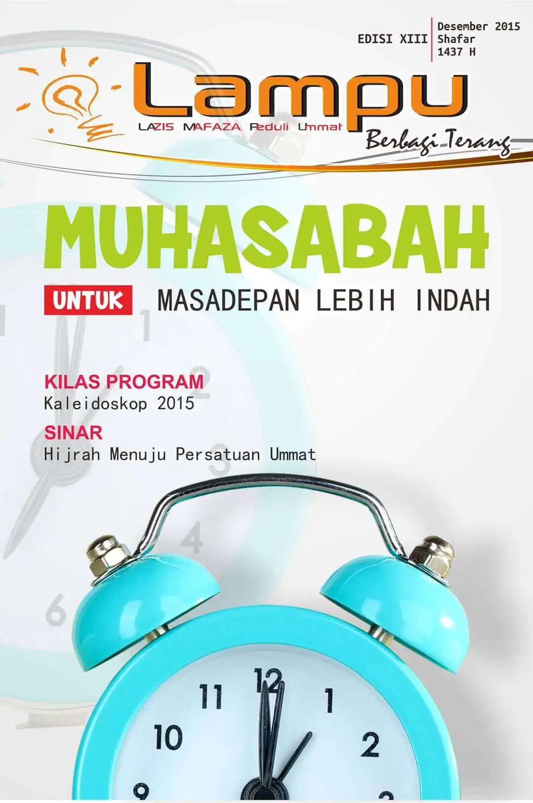
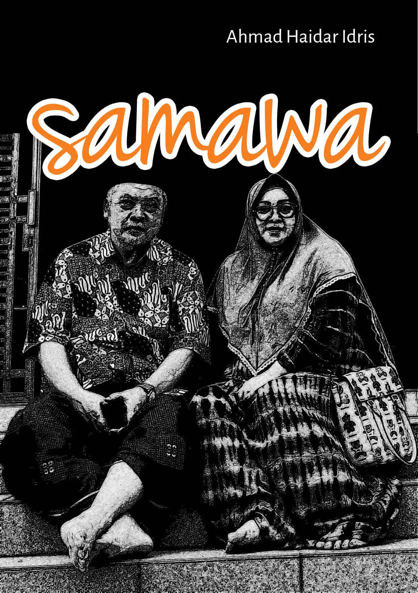
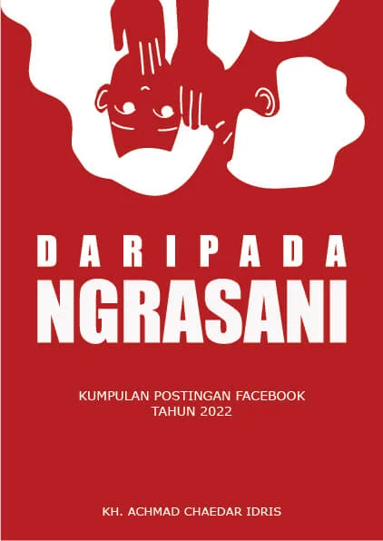
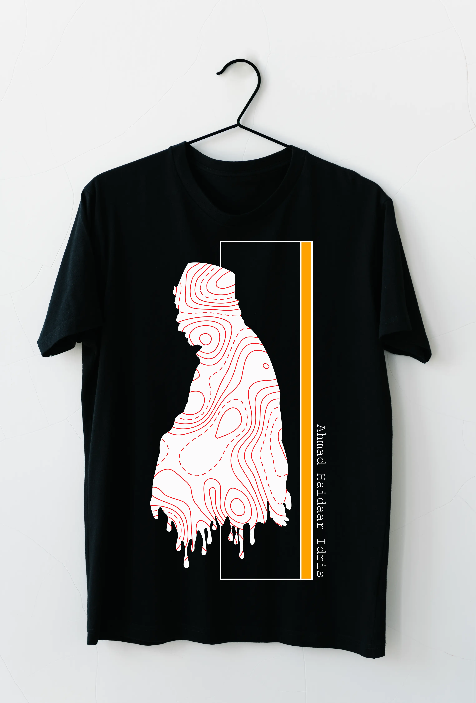

1 / 1

Arsitek Digital All-in-One berbasis di Wonosobo — dari desain buku & majalah hingga sistem web yang fungsional.
Salam! Saya Wahyu Arif Kurniawan, seorang Arsitek Digital All-in-One dengan kecintaan pada inovasi. Pengalaman sebagai freelancer memberikan fondasi yang kuat untuk eksplorasi kreatif dan solusi desain yang efektif.
Dengan lebih dari 4 tahun pengalaman, saya telah berkontribusi pada proyek layouting buku, majalah, buletin, pamflet, baliho, dan website.

Generalis berpengalaman di web development, desain grafis, dan TI sejak 2014.
UI/UX Designer & Web Developer · Wonosobo








Solusi digital profesional untuk individu, UMKM, dan lembaga pendidikan.
Dari desain visual yang memukau hingga sistem web fungsional — saya hadir sebagai mitra digital terpercaya.
Desain tata letak antarmuka web responsif dan ramah pengguna dengan pendekatan visual yang bersih dan efisien.
Pengembangan website statis dan dinamis, termasuk sistem manajemen pondok berbasis Laravel atau PHP native.
Desain grafis: banner, kartu undangan, buku, majalah, dan materi promosi dengan Photoshop & Illustrator.